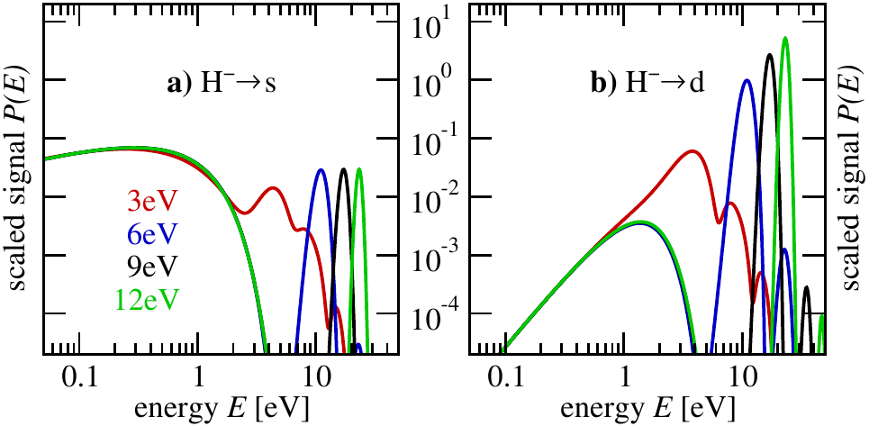
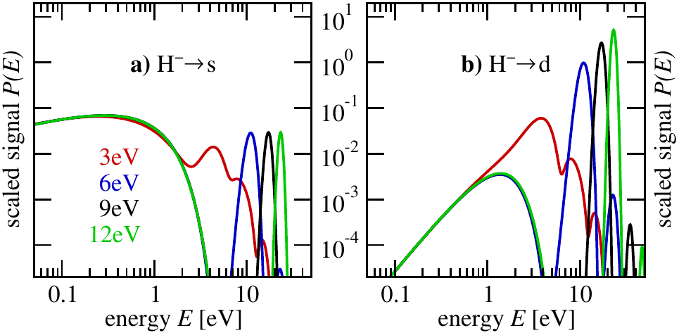

Hi, I'm Sajad.
Computational Physicist · Attosecond science · HPC
A theoretical physicist specializing in quantum mechanics with years of experience in C++ and Python programming. I excel in simulating complex systems using parallel methods like MPI, SYCL and OpenMP. My work focuses on atomic, molecular, and optical physics, particularly the response of atoms, molecules, and solids to strong ultra-short laser pulses. This research is highly relevant to experimentalists due to the widespread use of such pulses in laboratories globally.
Right now: High Performance Computing Expert at the Leibniz Supercomputing Centre (LRZ). I maintain the Kokkos package & course and benchmark/support codes like AthenaK, openCPMD, and CP2K.
 
